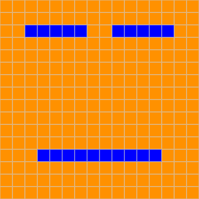

A favicon is a icon that can be found in in the wesite url and bookmark that represent the website and what it is it about. I made this favicon by going to code.org and then in unit 2 stage 4: part 9 it lets you make a favicon 16 by 16 you can make it bigger change the pixel so you can have more color, but I wanted to use the color of New York Knicks because I like baskball and I the -_- because I like that emoji and I use it when I text.
